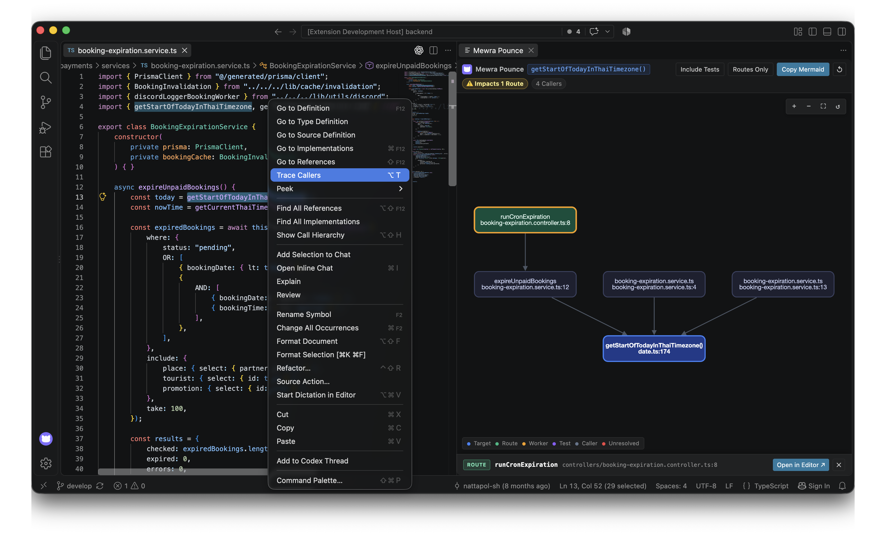
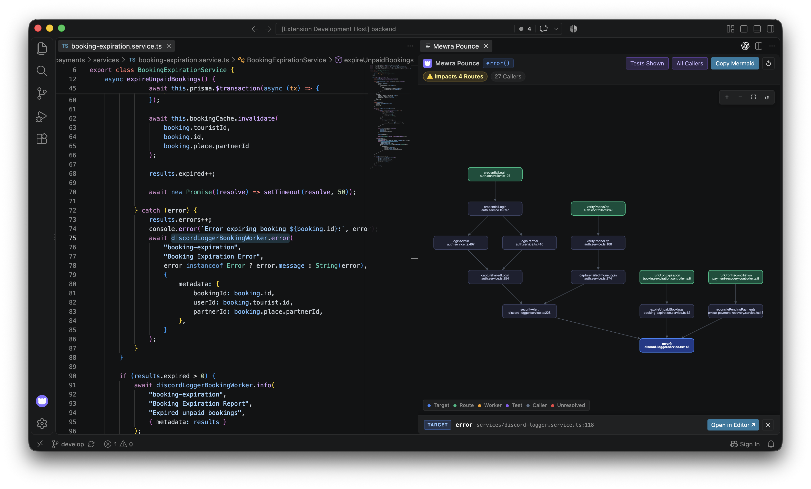

See every route that can reach your function — at a glance.
Mewra Pounce traces the reverse call hierarchy of any function and renders a live, interactive directed graph — highlighting API routes, background workers, and cron jobs.

Built for Real-World Refactoring
Say goodbye to expanding text trees level by level. Understand your blast radius in seconds.
Blast Radius Analysis
Instantly see how many API routes, queue workers, and cron jobs depend on a service function before you modify or delete it.
Instant Shortcut
Place cursor on any function name and press
⌥T (macOS) or Alt+T (Windows/Linux) to
visualize incoming callers immediately.
Smart Noise Filters
Toggle unit test files off with a single click
(Alt+Shift+T) or filter strictly to entry-point HTTP
routes only.
1-Click Mermaid Export
Generate clean Mermaid diagram markdown ready to paste into GitHub Pull Request descriptions for instant reviewer architecture context.
100% Local-First & Private
Zero external network calls, zero telemetry, no third-party cloud. Everything runs privately inside your local VS Code editor.
Interactive Navigation
Pan, zoom, fit view, and click any node in the directed graph to jump directly to that exact line of source code.
Detect Blast Radius Across Auth & Cron Jobs
When refactoring shared utilities like
discordLogger.error(), Mewra Pounce instantly reveals
all 4 entry points (2 Authentication API routes and 2 Scheduled
Cron Jobs) across 27 callers before you introduce breaking
changes.

Polyglot Language Support
Powered by standard Language Server Protocol (LSP) reverse call hierarchy.